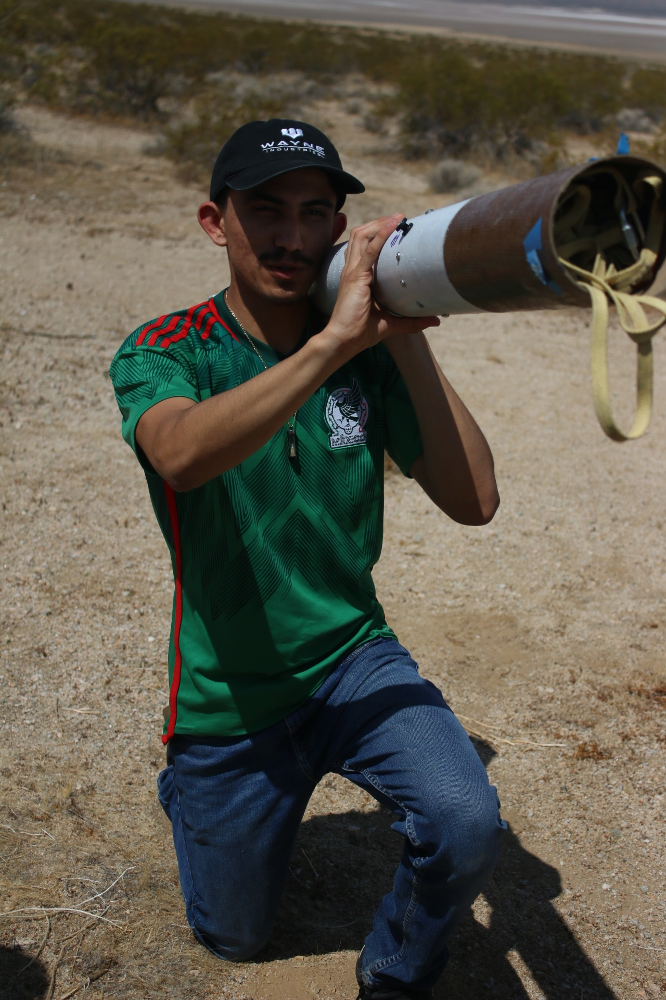

About Me

I am a Mechanical Engineering student with experience in high-powered rocketry, CAD design, manufacturing, materials testing, embedded systems, and engineering analysis. My interests include Mechanical engineering, product development, propulsion systems, and turning engineering concepts into real-world solutions through design, fabrication, and testing.
Projects
High-Powered Rocket Design Team
Designed propulsion and structural components for experimental high-powered rockets. Performed OpenRocket simulations, developed CAD models, and contributed to CanSat payload housing and deployment mechanisms.
Folding Knife Design & Manufacturing
Designed and fabricated a folding knife using CAD, tolerance analysis, grinding operations, heat treatment, and manufacturing techniques.
Tiny House Thermal Performance Study
Built and tested model tiny houses with varying insulation and surface finishes. Used MATLAB to analyze temperature data and predict annual energy consumption and utility costs.
Raspberry Pi Sensor Integration
Developed software to collect accelerometer data, control LED matrix displays, and respond to user inputs and orientation data using Raspberry Pi.
Materials Engineering Research
Conducted tensile testing, case hardening, heat-treatment, and shape-memory alloy experiments to evaluate material properties and microstructural behavior.
Skills
Resume
Download my latest resume below.
Download ResumeContact
Email: miguarcon@email.com
GitHub: github.com/miguarcon-cyber
LinkedIn: linkedin.com/in/miguel-alarcon-661a72300